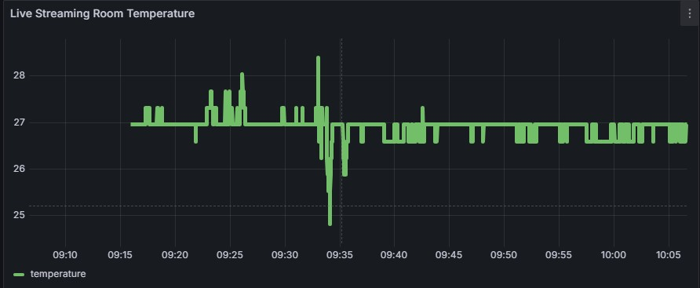
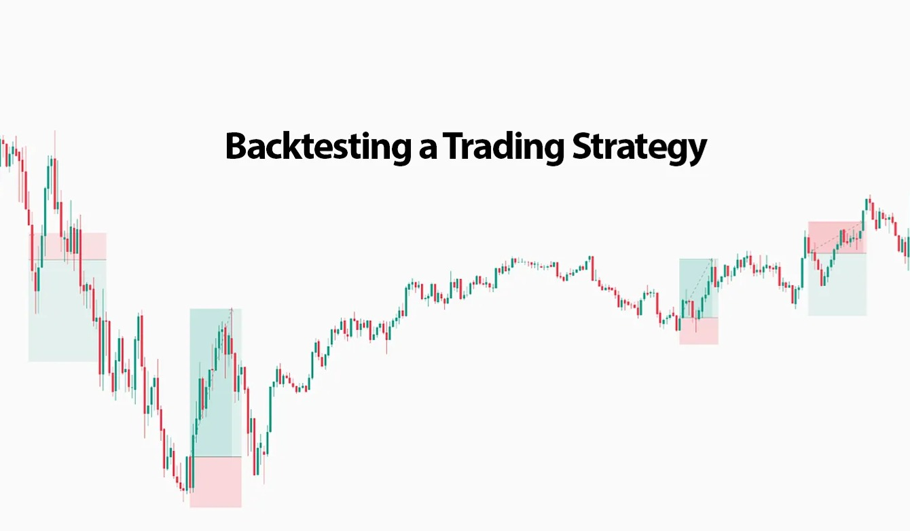
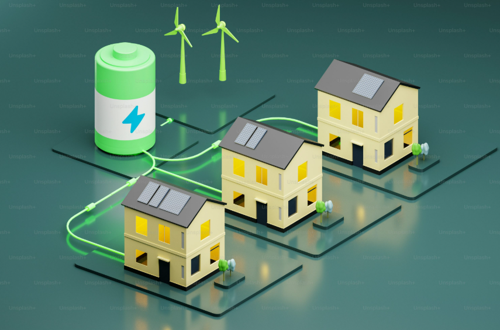

Experience seamless room temperature monitoring with this end-to-end IoT pipeline! Using a Raspberry Pi, MQTT, Node-RED, and time-series databases (MySQL & InfluxDB), real-time temperature data is published, processed, and live-visualized in Power BI and Grafana dashboards. From sensor readings to cloud dashboards, this project showcases scalable, resilient, and flexible IoT data streaming in action—perfect for smart home, industry, or learning enthusiasts. Explore live data, real dashboards, and the power of Industry 4.0 at home!

Discover the Python-powered intraday trading strategy for the NSE 50 index! This project rigorously tests the “first candle high breakout” method with minute-level data, offering flexible risk management, automated backtesting, and clear performance metrics. Easily experiment with target and stop-loss values to suit your trading style. All analytics and code are open-source for learning, experimentation, and automation. For educational use only—trading involves risk.
Ready to transform your manufacturing process into a model of sustainability and efficiency, guided by powerful analytics? This project harnesses advanced analytics to unlock actionable insights from your sustainable manufacturing data. By evaluating metrics such as material efficiency, energy productivity, water conservation, and CO₂ emissions, the dashboard benchmarks machine performance, flags inefficiencies, and detects anomalies. It empowers decision-makers to identify high-impact opportunities, optimize resource use, and balance productivity with environmental responsibility—all essential for driving a truly sustainable manufacturing operation.
Imagine transforming manufacturing operations by detecting inefficiencies, predicting machine failures, and optimizing production—all through one powerful dashboard. This interactive dashboard centralizes machine performance data to provide actionable insights for improving efficiency and enabling predictive maintenance. Built using Power BI, it visualizes metrics like defect rates, production speed, and energy consumption, helping decision-makers identify underperforming machines and reduce downtime. With real-time visibility into operations, this tool drives smarter decisions and enhances productivity.
What if you could pinpoint where your customer support needs improvement across every department, agent, and location—at a glance? This interactive dashboard transforms customer support data into actionable insights. Using Power BI, it centralizes metrics like call volumes, unresolved issues, and satisfaction ratings. Managers can identify bottlenecks, recognize top agents, and understand geographical trends. The dashboard enhances service quality by providing a comprehensive view of operations, enabling data-driven decisions to improve efficiency and customer satisfaction.

What if you could uncover hidden opportunities to optimize energy usage across cities and buildings, all in one view? This interactive dashboard centralizes energy data for five major U.S. cities, providing insights into consumption patterns by city, building, and energy type. Using Power BI, it identifies high-cost buildings and seasonal trends, empowering decision-makers to optimize energy usage and reduce costs. Whether aiming to cut expenses or enhance sustainability, this dashboard offers actionable insights to drive impactful changes in energy management.
What if you could visualize gender diversity trends across your organization, revealing opportunities for more inclusive leadership? This interactive dashboard analyzes gender diversity trends across departments, job levels, and regions from 2012 to 2020. Using Power BI, it provides actionable insights to improve diversity and inclusion initiatives. The dashboard enables leadership teams to monitor diversity metrics dynamically, informing recruitment strategies and decision-making processes. Whether aiming to increase women in executive roles or enhance departmental diversity, this tool offers valuable insights for creating a more inclusive workplace.